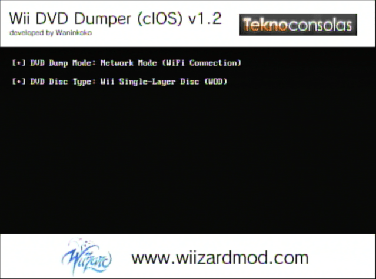

Scaricare giochi Wii/Gamecube
Per supporto in Inglese, chiedi su RiiConnect24 su Discord.
Vuoi copiare un gioco GameCube o Wii da un disco? Ci sono due modi per farlo, a seconda degli strumenti che hai a disposizione.
Guida Cleanrip
Di cosa hai bisogno
- Una Scheda SD o un USB con almeno 4.7 GB di spazio libero (8.5 GB se stai dumpando un disco Dual layer).
- CleanRip
Istruzioni
Sezione 1 - Scaricando/Installando
- Estrai CleanRip e mettilo nella cartella
appssulla tua scheda SD o chiavetta USB. - Inserisci la tua scheda SD dentro la Wii, e carica CleanRip dall’Homebrew Channel.
Sezione 2 - Copiare
- Seleziona il dispositivo dove vuoi trasferire il tuo gioco - la tua chiavetta USB o scheda SD.

- In questa schermata, ti chiederà se vuoi scaricare il file con game checksums così puoi verificare che la copia creata è una copia 1:1 del disco. Spetta a te se dire
SioNoper scaricare il file.
- Ora inserisci il gioco che vuoi copiare.


- Impostalo come mostrato nello schermo qui sotto.
Se stai scaricando uno dei 13 giochi su questa lista, imposta Dual Layer a Yes.

- CleanRip ora copierà il tuo gioco. Ci può volere un po’ di tempo, siccome copierà tutti i 4.7GB di contenuto sul disco (9.4 per dischi a doppio strato).

Copiare un gioco tramite la rete locale
title: “Dumping giochi Wii/GameCube usando la rete locale” —
Di cosa hai bisogno
- Una Wii.
- Un DVD Dump Tool
La tua Wii ed il tuo computer devono essere collegati ad una rete locale
Istruzioni
Sezione 1 - Scaricare/Installare
- Estrai DVD Dump Tool e mettilo nella cartella
appssulla tua scheda SD o chiavetta USB. - Inserisci la tua scheda SD dentro la Wii, e carica DVD Dump Tool dall’Homebrew Channel.
Sezione 2 - Copiare
- Premi i pulsante destra sul d-pad e premi “A”

- Scegli il disco che vuoi copiare (Le opzioni sono:
GameCube Disc,Wii Single-Layer Disc,Wii Dual-Layer Disce premi “A”  - Ora metti il tuo gioco nella Wii. (Se questo è già nella tua Wii, prima lo espelli e poi lo reinserisci)


- Ricordati il tuo URL Wii (Indirizzo IP)

- Sul tuo computer nel tuo browser, inserisci il tuo URL Wii e premi INVIO.

- Dovresti vedere questo. Clicca su
Clicca qui per scaricare XXXX.ios
- La velocità di trasferimento non è tra le migliori, ma se non puoi usare nient’altro, è meglio di niente.